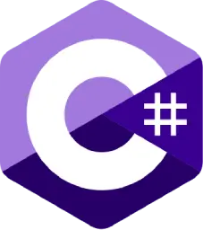
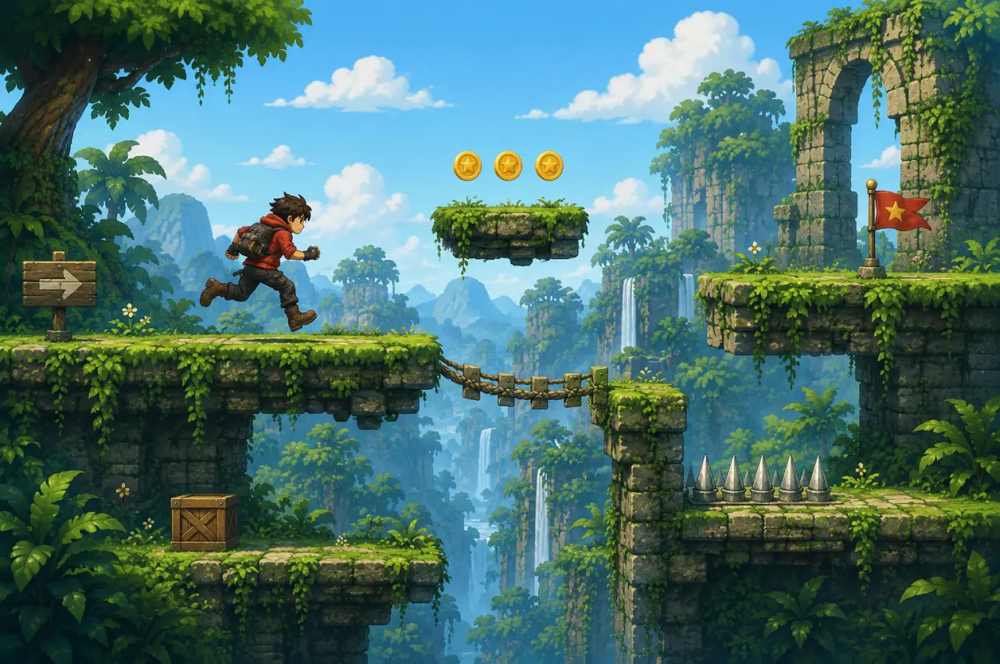
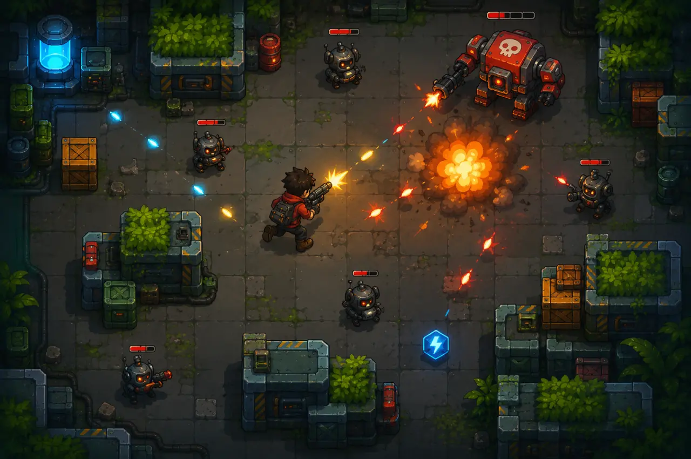
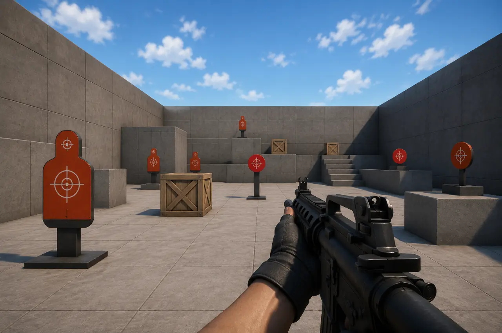

Learning by building
Students work on focused vertical slices rather than large games. Each prototype targets specific gameplay and production skills.
A collection of small, polished gameplay prototypes designed to help students strengthen their technical skills and build a professional portfolio.
These projects complement the official AR/VR curriculum by giving students more opportunities to practice gameplay programming, project organization, game feel, interaction design and portfolio presentation.
Students work on focused vertical slices rather than large games. Each prototype targets specific gameplay and production skills.
Every project should be clean, playable and properly documented on GitHub, published through a polished Itch.io page and promoted professionally with a dedicated LinkedIn post.
Students progressively adopt structured repositories, readable code, clear documentation and professional presentation workflows.


Short gameplay-focused platformer prototype centered around movement, collisions and level design.

Fast-paced arcade shooter focused on gameplay responsiveness, enemy systems and visual feedback.
Mobile-oriented endless runner prototype focused on procedural systems and optimization.

First-person gameplay prototype focused on precision shooting systems, raycasting and player metrics.
Advanced movement sandbox focused on traversal mechanics, verticality and gameplay fluidity.
These deliverables are an essential part of the learning process. They help students move beyond a simple prototype by documenting their work, presenting their technical choices and publishing a playable result that can be shared in a professional portfolio.